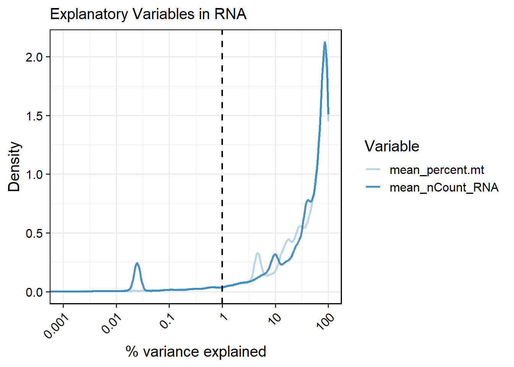

6 Batch effect evaluation
Compiled: 2025-05-08 Written by Shuting Lu and Daihan Ji
library(SingleCellMQC)
library(BPCells)
library(Seurat)
#Load a pre-existing Seurat object or process raw data using SingleCellMQC.
pbmc <- readRDS("/data/pbmc.rds")Batch-to-batch variation is a significant challenge in single-cell analysis, where differences in protocols, reagents, and experimental conditions can introduce noise that obscures true biological signals and leads to misleading interpretations. To address this issue, SingleCellMQC evaluates batch effects at both sample and cell levels.
6.1 Sample level
At the sample level, SingleCellMQC generates pseudobulk sample data by aggregating single-cell counts for target cell populations. PCA is then applied to identify batch effects across samples. In addition, SingleCellMQC performs singular value decomposition (SVD) analysis and calculates R² values to determine batch-associated variables that are significantly associated with principal components, providing insights into the main drivers of batch effects.
6.1.1 PCA of pseudobulk data at the sample level
To visualize the distribution of antibody batches for RNA/ADT data, you can perform PCA on pseudobulk data by specifying plot.type = "pseudobulk" in the PlotReducedDim function. Here’s an example using the batch variable Batch_TotalSeq_C_Antibodies in ADT data:
6.1.2 Performing SVD analysis and calculating R² values
To further investigate factors contributing to batch effects, SingleCellMQC performed SVD analysis and calculated R² values to analyze batch-associated variables. The PCA results from the ‘prcomp’ function were analyzed via Kruskal-Wallis tests (categorical variables) or linear regression (continuous variables) to detect the significance of the relationship between the variable and the PC scores. Additionally, the proportion of variance explained by batch-associated variables was quantified for each feature using ANOVA-derived R² (categorical) or regression-based R² (continuous).
For ADT data, the covariates "nCount_ADT", "Batch_TotalSeq_C_Antibodies", and "Time_point" are analyzed as follows:
out <- PlotCovariateImpact(pbmc, pseudobulk.sample.by = "orig.ident",
assay = "ADT",
variables = c("nCount_ADT", "Batch_TotalSeq_C_Antibodies", "Time_point"))
# Verification of correlation between batch covariates and principal components.
out$svd # Display of the extent to which batch covariates contribute to the principal components
out$explanatory
# Presentation of results with interactive tables
out<-PlotCovariateImpact(pbmc, variables =c("nCount_ADT", "Batch_TotalSeq_C_Antibodies"), assay = "ADT" , return.type = "interactive_table")
out$svdSVD significance pvalue
Explanatory PCs for each variable
- If you want to analyze based on a specific column (e.g., cell type annotations), you can split the data by cell type. For instance, if you have run
RunScTypeand obtained cell type annotations stored in the ScType column, you can perform SVD analysis and variance explanation (R²) for each sample split by cell type.
out <- PlotCovariateImpact(pbmc, pseudobulk.sample.by = "orig.ident",
assay = "ADT", pseudobulk.celltype.by= "ScType",
variables = c("nCount_ADT", "Batch_TotalSeq_C_Antibodies", "Time_point"),
return.type = "interactive_table")
## 2025-05-08 00:25:14-------- Split Seurat Object
## 2025-05-08 00:25:16 svd all
## 2025-05-08 00:25:17 svd B cell
## 2025-05-08 00:25:17 svd DC
## 2025-05-08 00:25:17 svd Mon/Mac
## 2025-05-08 00:25:18 svd NK
## 2025-05-08 00:25:18 svd Other
## 2025-05-08 00:25:19 svd T cell
## 2025-05-08 00:25:19 explanatory all
## 2025-05-08 00:25:20 explanatory B cell
## 2025-05-08 00:25:20 explanatory DC
## 2025-05-08 00:25:21 explanatory Mon/Mac
## 2025-05-08 00:25:21 explanatory NK
## 2025-05-08 00:25:22 explanatory Other
## 2025-05-08 00:25:22 explanatory T cell
# Display of the correlation between the covariates of the batch and the principal component PC1
out$svd$PC1 SVD significance pvalue (PC1)
# Display of the contribution of the batch covariates to the principal component PC1
out$explanatory$PC1Explanatory PCs for each variable (PC1)
6.2 Cell level
At the cell level, SingleCellMQC performs UMAP analysis on the original single-cell data to visualize batch-related variability. This approach is adaptable to both single-omics and multi-omics datasets. Additionally, SingleCellMQC also integrates the harmony method for batch correction. Users can compare the data before and after correction through UMAP visualizations. Moreover, SingleCellMQC calculates the percentage of variance explained by different variables for both RNA and surface protein features in the original single-cell data at the cell level. This method enables users to identify specific batch covariates that impact feature expression.
The RunPipeline() function must be used to flow through the data to obtain the results of the clustering prior to the assessment of the batch effect.
6.3 Feature level
At the feature level, SingleCellMQC calculates the percentage of variance (R²) explained by different variables for both RNA and surface protein features. These analyses are performed at single-cell and pseudobulk levels, enabling users to quantify the contribution of batch-specific covariates to feature expression variation. For each feature, the proportion of variance explained (R²) by categorical variables (one-way ANOVA) or continuous covariates (linear regression).
6.3.1 Calculating per-feature variance explained by variables at cell level
# Specify 'variables' to see the effect of the variable of interest on gene expression
out <- RunVarExplainedPerFeature(pbmc, variables =c("percent.mt", "nCount_RNA","Batch_EXP"),
type = "cell",
assay = "RNA")
# Interactive table (top 10)
PlotVEPerFeature(out, return.type = "interactive_table", ntop = 10, csv.name="cell_VE")Variance Explained per Feature (top 10)
6.3.2 Calculating per-feature variance explained by variables at sample level
# Specify 'variables' to see the effect of the variable of interest on gene expression
out <- RunVarExplainedPerFeature(pbmc, variables =c("percent.mt", "nCount_RNA","Batch_EXP"),
type = "pseudobulk",
assay = "RNA")
## Warning in FUN(X[[i]], ...): Variable 'Batch_EXP' has a unique value for every observation (R2=100% is trivial and uninformative). Skipping.
# Interactive table (top 10)
PlotVEPerFeature(out, return.type = "interactive_table", ntop = 10, csv.name="sample_VE")Variance Explained per Feature (top 10)
